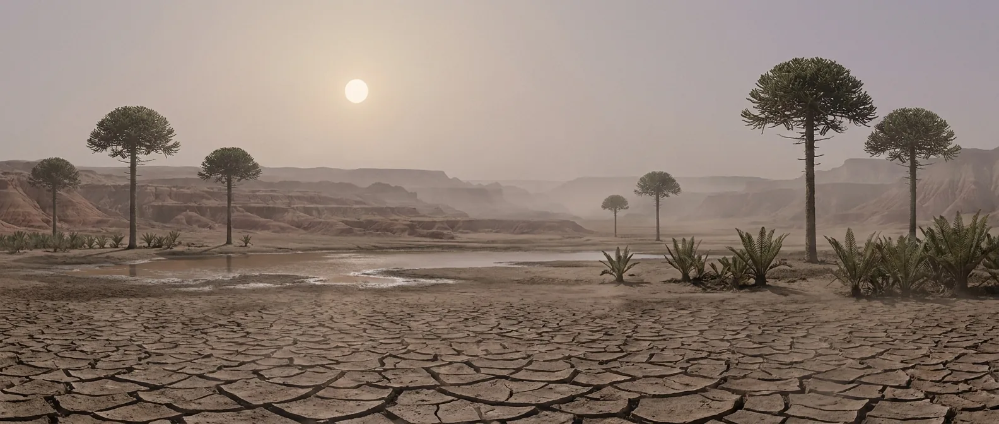

Earth after the worst thing that ever happened to it. Ecosystems are missing most of their parts, the tropics are too hot for large animals to live in, and the air holds less oxygen than at any other point in the last half billion years. Dinosaurs start here, small and unimpressive.
The only era after the Silurian where the atmosphere is again a primary problem. Permanent altitude sickness combined with desert heat is a specifically bad pairing: the standard response to heat is to breathe and sweat more, and the air will not support it.

Scale 0–40%. The Phanerozoic minimum. At the low end of the range, sea level here feels like 4,500 m — comparable to the highest permanently inhabited towns on Earth, and those took generations to adapt to.
Scale 0–4,000 ppm. Four to seven times modern, holding the planet in a hothouse with no polar ice anywhere.
Early Triassic tropical sea surface reaches ~40 °C. The fossil record shows a genuine gap: large tetrapods and most fish are simply absent from equatorial latitudes for millions of years.
Scale 0–24 h. About 379 days per year.
No ice at either pole for the entire period. The poles are also the only latitudes that are comfortable, which is where you should go.
Scale 0–30 m. Crocodile-line archosaurs run the Triassic, not dinosaurs. Dinosaurs are here, and for most of the period they are a minor group.
After four eras of breathable atmosphere, the Triassic takes it back. Not fatal, but every task costs more than it should, and it never improves past the ceiling your blood can carry.
Cooling down means moving air across wet skin and breathing harder. Both need oxygen you do not have. Heat tolerance and altitude tolerance draw on the same budget, and the Triassic charges you twice.
This is the post-extinction world. Fewer species, patchier vegetation, longer distances between water. Not hostile so much as thin, and thin is harder to forage in than hostile.
Conifers, cycads, ferns and seed ferns. Cycad seeds contain cycasin, which the gut converts into a genuine liver toxin, and BMAA, a neurotoxin. Traditional preparation takes days of soaking that people worked out over generations. You would not have generations.
No single failure. Chronic hypoxia, heat load, thin food and long distances between water compound until you stop being able to cover the distances.
Go as far from the equator as you can and stay near permanent water.
The worst of the post-Silurian eras. Nothing you can do about it.
Seasonal and localised. Finding it is the daily task that structures everything else.
Fish, small reptiles, early mammaliaforms, insects. Protein only, again.
Works, but sluggishly at low oxygen. Flames are cooler and harder to start than you expect.
Conifer timber where the trees are. Shade matters more than walls here.
Present and either indigestible or toxic. The cycads are actively dangerous.